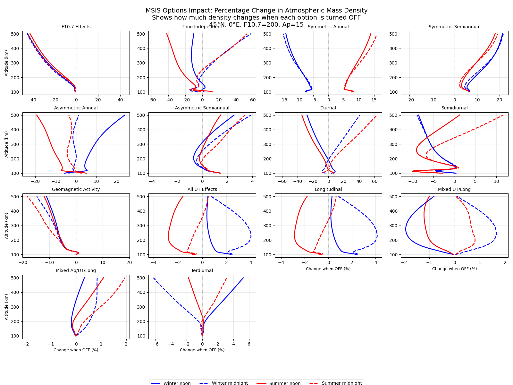

Note
Go to the end to download the full example code.
Altitude Impact Comparison#
This example demonstrates the visual impact of each MSIS option by showing altitude profiles of percentage changes in atmospheric mass density when each option is turned OFF compared to when it’s ON. This makes it easy to see which options have the largest effects and at what altitudes.
The plot shows a 4x4 grid where each subplot displays the percentage change in density when a specific option is turned off. Four conditions are tested: - Winter noon (solid blue line) - Winter midnight (dashed blue line) - Summer noon (solid red line) - Summer midnight (dashed red line)
This reveals both seasonal and diurnal variations for each atmospheric process.
import matplotlib.pyplot as plt
import numpy as np
import pymsis
# Define common parameters for all calculations
lon = 0 # Equator
lat = 45 # Mid-latitude
alts = np.linspace(100, 500, 100) # Focus on thermosphere where effects are largest
f107 = 200 # High solar activity to enhance effects
f107a = 180
ap = 15 # Moderate geomagnetic activity
# Define four conditions to show both seasonal and diurnal effects clearly
date_winter_noon = np.datetime64("2003-01-01T12:00") # Winter solstice, noon
date_winter_midnight = np.datetime64("2003-01-01T00:00") # Winter solstice, midnight
date_summer_noon = np.datetime64("2003-07-01T12:00") # Summer solstice, noon
date_summer_midnight = np.datetime64("2003-07-01T00:00") # Summer solstice, midnight
aps = [[ap] * 7]
# Define the options to test (first 14 are the main physical effects)
option_names = [
"F10.7 Effects",
"Time Independent",
"Symmetric Annual",
"Symmetric Semiannual",
"Asymmetric Annual",
"Asymmetric Semiannual",
"Diurnal",
"Semidiurnal",
"Geomagnetic Activity",
"All UT Effects",
"Longitudinal",
"Mixed UT/Long",
"Mixed Ap/UT/Long",
"Terdiurnal",
]
# Create the subplot grid
fig, axes = plt.subplots(4, 4, figsize=(16, 12))
axes = axes.flatten()
# Calculate baseline with all options on for all four conditions
baseline_options = [1] * 25
baseline_winter_noon = pymsis.calculate(
date_winter_noon, lon, lat, alts, f107, f107a, aps, options=baseline_options
)
baseline_winter_midnight = pymsis.calculate(
date_winter_midnight, lon, lat, alts, f107, f107a, aps, options=baseline_options
)
baseline_summer_noon = pymsis.calculate(
date_summer_noon, lon, lat, alts, f107, f107a, aps, options=baseline_options
)
baseline_summer_midnight = pymsis.calculate(
date_summer_midnight, lon, lat, alts, f107, f107a, aps, options=baseline_options
)
# Extract mass density (first component) and squeeze dimensions
baseline_winter_noon = np.squeeze(baseline_winter_noon)[:, pymsis.Variable.MASS_DENSITY]
baseline_winter_midnight = np.squeeze(baseline_winter_midnight)[
:, pymsis.Variable.MASS_DENSITY
]
baseline_summer_noon = np.squeeze(baseline_summer_noon)[:, pymsis.Variable.MASS_DENSITY]
baseline_summer_midnight = np.squeeze(baseline_summer_midnight)[
:, pymsis.Variable.MASS_DENSITY
]
for i, (ax, option_name) in enumerate(zip(axes[:14], option_names, strict=True)):
# Create options array with the i-th option turned off
test_options = [1] * 25
test_options[i] = 0
# Calculate atmosphere with option turned off for all four conditions
test_winter_noon = pymsis.calculate(
date_winter_noon, lon, lat, alts, f107, f107a, aps, options=test_options
)
test_winter_midnight = pymsis.calculate(
date_winter_midnight, lon, lat, alts, f107, f107a, aps, options=test_options
)
test_summer_noon = pymsis.calculate(
date_summer_noon, lon, lat, alts, f107, f107a, aps, options=test_options
)
test_summer_midnight = pymsis.calculate(
date_summer_midnight, lon, lat, alts, f107, f107a, aps, options=test_options
)
# Extract mass density and squeeze dimensions
test_winter_noon = np.squeeze(test_winter_noon)[:, pymsis.Variable.MASS_DENSITY]
test_winter_midnight = np.squeeze(test_winter_midnight)[
:, pymsis.Variable.MASS_DENSITY
]
test_summer_noon = np.squeeze(test_summer_noon)[:, pymsis.Variable.MASS_DENSITY]
test_summer_midnight = np.squeeze(test_summer_midnight)[
:, pymsis.Variable.MASS_DENSITY
]
# Calculate percentage differences (Option OFF vs Option ON)
percent_diff_winter_noon = (
100 * (test_winter_noon - baseline_winter_noon) / baseline_winter_noon
)
percent_diff_winter_midnight = (
100
* (test_winter_midnight - baseline_winter_midnight)
/ baseline_winter_midnight
)
percent_diff_summer_noon = (
100 * (test_summer_noon - baseline_summer_noon) / baseline_summer_noon
)
percent_diff_summer_midnight = (
100
* (test_summer_midnight - baseline_summer_midnight)
/ baseline_summer_midnight
)
# Always plot all four conditions with clear color/linestyle scheme
# Blue = Winter, Red = Summer, Solid = Noon, Dashed = Midnight
ax.plot(percent_diff_winter_noon, alts, "b-", linewidth=2, label="Winter noon")
ax.plot(
percent_diff_winter_midnight, alts, "b--", linewidth=2, label="Winter midnight"
)
ax.plot(percent_diff_summer_noon, alts, "r-", linewidth=2, label="Summer noon")
ax.plot(
percent_diff_summer_midnight, alts, "r--", linewidth=2, label="Summer midnight"
)
# Calculate max differences for axis scaling
all_diffs = [
np.max(np.abs(percent_diff_winter_noon)),
np.max(np.abs(percent_diff_winter_midnight)),
np.max(np.abs(percent_diff_summer_noon)),
np.max(np.abs(percent_diff_summer_midnight)),
]
# Add vertical line at zero for reference
ax.axvline(x=0, color="gray", linestyle=":", alpha=0.5, linewidth=1)
ax.set_title(option_name, fontsize=10)
ax.grid(True, alpha=0.3)
# Set reasonable x-axis limits based on the data
max_abs_diff = max(all_diffs)
if max_abs_diff > 0.1: # Only set limits if there's meaningful variation
ax.set_xlim(-max_abs_diff * 1.1, max_abs_diff * 1.1)
else:
ax.set_xlim(-5, 5) # Default small range for options with minimal effect
# Only show x-labels on bottom row
if i >= 10:
ax.set_xlabel("Change when OFF (%)", fontsize=9)
# Only show y-labels on leftmost column
if i % 4 == 0:
ax.set_ylabel("Altitude (km)", fontsize=9)
# Remove unused subplots
for i in range(14, 16):
axes[i].remove()
# Add overall title and legend
fig.suptitle(
"MSIS Options Impact: Percentage Change in Atmospheric Mass Density\n"
"Shows how much density changes when each option is turned OFF\n"
f"{lat}°N, {lon}°E, F10.7={f107}, Ap={ap}",
fontsize=14,
y=0.98,
)
# Add single legend for all subplots showing all four conditions
handles, labels = axes[0].get_legend_handles_labels()
fig.legend(
handles,
labels,
loc="upper center",
bbox_to_anchor=(0.5, 0.02),
ncol=len(labels),
fontsize=10,
)
plt.tight_layout()
plt.subplots_adjust(top=0.92, bottom=0.12)
plt.show()
Total running time of the script: (0 minutes 1.119 seconds)